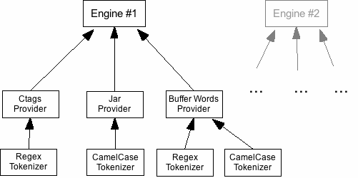
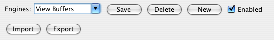
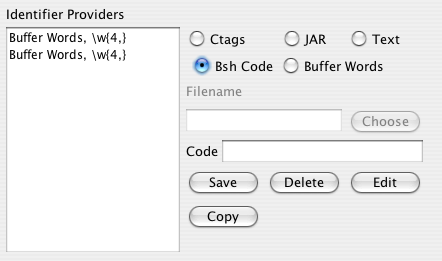
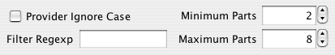
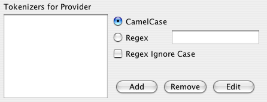
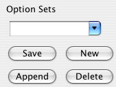
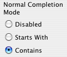
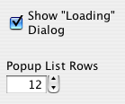

CamelComplete Plugin
for JEdit
This guide corresponds to version 2.7.0 of the plugin.
The authoritative version of this document is a PDF file, available for download at
http://www.box.net/shared/0iuypzx8gs
Table of Contents
1. Introduction
2. Usage
3.1. Mode
3.2. Engines
3.3. Providers
3.4. Tokenizers
3.5. Option Sets
4. Internals
JEdit already has a built-in facility for simple word completion, where for instance the user types “IOExc” and JEdit will complete it into “IOException”. CamelComplete provides a different type of completion, one that works well for most programming languages: it breaks down words like “IOException”, “setEnabled”, and “gtk_file_chooser_new” into their constituent words, so that you can type the first letter of each part—“IOE”, “sE”, and “gfcn” for these examples—and then hit one key and have them expanded into the full identifier.
A few more examples of identifiers and their abbreviations are,
|
Identifier |
Abbreviation |
|---|---|
|
SwingUtilities |
SU |
|
GtkMessageBox |
GMB |
|
IOException |
IOE |
|
gtk_check_menu_item_set_inconsistent |
gcmisi |
|
apr_thread_lock_hold |
atlh |
|
multi-define-syntax |
mdx |
The one-minute quickstart to using CamelComplete is to
Install CamelComplete from JEdit’s Plugin Manager
Ensure that Simple Mode is selected in the plugin’s options
Bind CamelComplete→Simple Complete to an easy shortcut from JEdit’s general preferences.
This configuration will work for languages like C and Java, that use either “CamelCase” notation, or underscore separators. To have CamelComplete work with other types of identifiers, you’ll need to delve into Advanced Mode, where madness awaits.
Before version 2.7.0, Advanced Mode was the only way to configure CamelComplete, and it was so daunting that even the author forgot how to use it after three days. This section of the guide is as much a reminder and reference to him as it is for the user.
To get started, here is a graphical overview of the concepts involved in CamelComplete.

An engine is basically a database of identifiers along with the abbreviations associated with them. A provider is a source of identifiers, such as a Ctags output file containing the names of functions in a C library. A tokenizer is what breaks each identifier name into its constituent words and determines the abbreviation for it.
As in the above diagram, each engine can have multiple providers, and each provider can have multiple tokenizers operating on the identifiers it loads. Having more than one tokenizer per provider is useful because you might want to have an identifier like “HgLib_Error” have both the “HLE” and “HE” abbreviations, to account for different styles of naming at the same time. Since you can enable or disable engines one by one, having multiple engines lets you process only the identifiers you need for your current project, without wasting time searching engines with unrelated abbreviations loaded in them.
Okay, with that under our belts, we’ll go to the interface itself.
 At the very top is a set of radio buttons that let you choose between
simple and advanced mode. In simple mode, all the options controls
will disappear, and you’ll just see this:
At the very top is a set of radio buttons that let you choose between
simple and advanced mode. In simple mode, all the options controls
will disappear, and you’ll just see this:
If you check “Search All Buffers” then the plugin will search all of your open buffers for identifiers, while otherwise it searches only visible buffers, as the built-in completion command does.

The names of all your saved engines are listed in the drop down combo box. To create a new engine, click New, set up the providers for it (as you’ll see below), type a name for it in the combo box, and click Save. To delete an engine, select it from the list and click Delete. Uncheck the Enabled box and click Save to temporarily disable the displayed engine. The plugin will skip over it when it’s trying to expand an abbreviation.
Export allows you to save a number of your configured engines to a file, from which they can be loaded later or sent to another user. Load such a saved file by clicking Import. For both these functions, you’ll see a list of the saved engine names. Highlight the ones you want to export or import, and confirm.

This is the section where you manage providers. To create a new provider, you first select one of the types:
Ctags – load identifiers from a file that contains output from the ctags1 program. You’ll Choose the file using JEdit’s file system browser.
JAR – load class names (but not methods, fields, etc.) from a .jar file.
Text – read identifiers, one per line, from a standard text file.
Bsh Code – This is for users who want to use custom providers. The snippet of BeanShell code that you enter should return an instance of com.illengineer.jcc.IdentifierProvider
Buffer Words – Collects identifiers from currently opened buffers. If you select this button, you’ll see two new options: Only Active Views, which causes the provider to search only displayed buffers; and Regex, where you type in a regular expression that defines the identifiers you want to collect. The regex I use is \w{4,} which collects all words of length four or higher.
Once you have set up the provider (including tokenizers, as below) you’ll click Save. To delete, copy, or edit a provider, use one of the other buttons. Note that after you click Edit and make your changes, you’ll need to click Save to commit them.

These controls, below the tokenizer options, set parameters of the current provider.
Provider Ignore Case – this stores identifiers in such a way that both "AIOOBE" and "aioobe", or any case combination between, will expand to "ArrayIndexOutOfBoundsException"
Filter Regexp – any identifier matching this regular expression will not be considered for inclusion.
Minimum and Maximum Parts – described in the section on Tokenizers, as a way to choose which of this provider’s tokenizers should be used for a given identifier.

Tokenizers are what break up an identifier into the parts that will be used for its abbreviation. The CamelCase tokenizer splits an identifier by breaking it at every capital letter, so that “setMenuOption” will be reduced to “sMO” and “IOException” as “IOE”. The Regex tokenizer allows you to enter a regular expression that will be used to split identifiers; this allows almost complete control, and in fact can be used to perform custom CamelCase tokenization.
As an example, here is the regex that I prefer:
(?<=[A-Z])(?=[A-Z][a-z])|(?<=[a-z0-9])(?=[A-Z])|_
this uses look-ahead and look-behind assertions to split CamelCased words a little differently—“IOException” maps to “IE” instead of “IOE” as before. Also, it splits on underscores, for typical C-language names. If you’re using XML or Lisp and want to split on dashes, just append a “|-” to the end of that regex.
Checking Regex Ignore Case will make the regular expression case-insensitive.
When you have multiple tokenizers for one provider is when the minimum and maximum parts options become useful. Let’s say some identifiers in your file are CamelCase’d, and some split by underscores, and so you add both a CamelCase and Regex tokenizer (with the regex being “-”) to the provider; but you don’t want IOException to be processed by the regexp tokenizer to be “I”, and you don’t want “get_input_stream” to be processed by CamelCase to be “g”, and so by setting the minimum parts to be 2, these invalid abbreviations will be discarded. The maximum parts option ensures that “OPEN_SAVE_FILE_HANDLE” isn’t abbreviated by CamelCase to be “OPENSAVEFILEHANDLE”, but rather is treated by the regex tokenizer.
Option Sets are a way to store groups of configured providers and tokenizers, so that you don’t lose them if you delete the engine they’re in, or so you can move them among different engines without re-entering them.
This feature was added before the plugin had support for multiple engines, but now isn’t quite so useful anymore. I’ve left it in in case someone prefers using option sets to multiple engines.
Normal Completion is like JEdit’s built-in completion function, but more versatile. First, you can collect words using a custom regexp as given in the Buffer Words provider option, and second, if you select Contains, you can type any part of the word to have it completed. For instance, if you have both “setButtonText” and “setLabelText”, you can just type “Button” or “Label” and have the plugin complete the identifier for you


These are global options.
Show Loading Dialog will cause a message to appear during the sometimes lengthy plugin initialization process, so you don’t think JEdit has crashed.
Popup List Rows controls how many rows of completions the plugin’s popup dialog shows.
Cache Data will write the lists of identifiers and abbreviations to disk when the plugin exits, and load them again when it starts.
Update on Startup processes all of the engines when the plugin loads. This means that Ctags and Jar files will be examined, and words loaded from open buffers.
Finally, if you’ve made changes to one or more engines, you can update only the currently displayed engine, or all of your engines, by using these buttons.
Currently, the CamelComplete plugin uses HashMaps and ArrayLists to store identifiers and abbreviations. This works well and quickly for small to medium size data sets, but since everything is kept in memory, loading large identifier lists would consume a lot of RAM.
Have the Jar file loader use reflection to also load method and field names. This would create very large lists of identifiers, so we would need something like the next improvement at the same time.
Use a disk-based storage mechanism instead of in-memory maps and lists. This could be an RDBMS (with a table for each abbreviation length) such as HSQLDB2, or a tree-based database like BerkeleyDB Java Edition3.
These examples show how the plugin can be scripted from your own macros.
Because of page-width limitations here, the ↩ symbol will be used to indicate that the code should be written all on one line without any breaks or whitespace.
Macro #1 – Update Buffer Words
Assuming that you have an engine named Buffers that has a Buffer Words provider that reads identifiers from all buffers, and you want to update its list:
com.illengineer.jcc.jedit.↩
CamelCompletePlugin.processConfiguration("Buffers");Macro #2 – Update and CamelComplete
If you have both “Buffers” and “View Buffers” engines, as you will if you use simple mode, and you want to update your buffer words and perform CamelCase Completion all in one keystroke, this macro will do it. Also, it shows how to test if another engine, “XML”, is enabled, and if so, use that engine to complete as well
import java.util.ArrayList; import com.illengineer.jcc.jedit.CamelCompletePlugin; CamelCompletePlugin.processConfiguration("View Buffers"); ArrayList list = new ArrayList(4); if (CamelCompletePlugin.isEngineEnabled("XML")) { CamelCompletePlugin.processConfiguration("XML"); list.add("XML"); } list.add("View Buffers"); list.add("Buffers"); CamelCompletePlugin.complete(view, textArea, 1, list);
Macro #3 – Update and Normal Complete
Normal completion is selected by
passing a different numerical parameter to
the
CamelCompletePlugin.complete()
method, specifically, 2, as shown here.
[... previous lines same as above ...] CamelCompletePlugin.complete(view, textArea, 2, list);